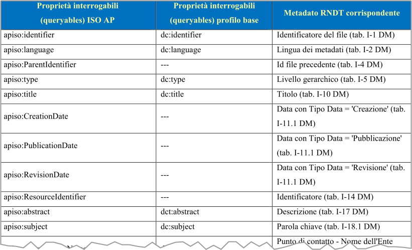

Ricette GDAL/OGR¶
Scaricare dati da un webservice ArcGIS¶
Prima lo interrogo, per avere restituito il nome del layer e altri metadati:
ogrinfo -so -ro -al "https://map.sitr.regione.sicilia.it/gis/rest/services/catasto/cartografia_catastale/MapServer/6/query?where=objectid+%3D+objectid&outfields=*&f=json"
L'output sarà qualcosa come:
Layer name: ESRIJSON
Geometry: Polygon
Feature Count: 1000
Extent: (13.097299, 37.166626) - (13.976281, 37.694915)
Layer SRS WKT:
PROJCS["ETRS89 / UTM zone 33N",
GEOGCS["ETRS89",
DATUM["European_Terrestrial_Reference_System_1989",
SPHEROID["GRS 1980",6378137,298.257222101,
AUTHORITY["EPSG","7019"]],
TOWGS84[0,0,0,0,0,0,0],
AUTHORITY["EPSG","6258"]],
PRIMEM["Greenwich",0,
AUTHORITY["EPSG","8901"]],
UNIT["degree",0.0174532925199433,
AUTHORITY["EPSG","9122"]],
AUTHORITY["EPSG","4258"]],
PROJECTION["Transverse_Mercator"],
PARAMETER["latitude_of_origin",0],
PARAMETER["central_meridian",15],
PARAMETER["scale_factor",0.9996],
PARAMETER["false_easting",500000],
PARAMETER["false_northing",0],
UNIT["metre",1,
AUTHORITY["EPSG","9001"]],
AXIS["Easting",EAST],
AXIS["Northing",NORTH],
AUTHORITY["EPSG","25833"]]
OBJECTID: Integer (0.0)
COMUNE: String (4.0)
SEZIONE: String (1.0)
FOGLIO: String (4.0)
ALLEGATO: String (1.0)
SVILUPPO: String (1.0)
ORIGINE: String (20.0)
Shape_Length: Real (0.0)
Shape_Area: Real (0.0)
E poi, lo scarico paginando:
ogr2ogr -overwrite -f SQLite -dsco SPATIALITE=YES -nlt MULTIPOLYGON -nln particelle particelle.sqlite "https://map.sitr.regione.sicilia.it/gis/rest/services/catasto/cartografia_catastale/MapServer/6/query?where=objectid+%3D+objectid&outfields=*&f=json" ESRIJSON -oo FEATURE_SERVER_PAGING="YES"
Nota
-nlt MULTIPOLYGONperché l'oggetto di input qui è unMULTIPOLYGON;- la paginazione della query è possibile quando
ArcGIS server >= 10.3e i layer da interrogare hanno l'impostazionesupportsPagination=true.
Usare gdal via docker¶
Si inizia con il prelevare l'immagine da un repository. Ad esempio questa di osgeo:
E poi si può lanciare in modo non interattivo dalla propria shell:
--rmper rimuovere il container non appena si esce da esso;-vper specificare i volumi da montare nell'host e nel container/from/host/:/on/container
Nell'esempio di sopra sto montando la cartella corrente dell'host e la cartella data del container.
In modo interattivo, invece il comando diventa:
Si usa in questo esempio /bin/sh, perché lanciando l'inspect dell'immagine - docker inspect osgeo/gdal:alpine-normal-latest - si ha (vedi qui):
"Cmd": [
"/bin/sh",
"-c",
"#(nop) COPY dir:bfa76ede215e381fc0e06a919358cf3fe603fbc832802559c2e82eeec03e484d in /usr/ "
]
Interrogare un server CSW¶
Se si vuole interrogare ad esempio il server CSW del Repertorio Nazionale dei Dati Territoriali, l'URL di riferimento è http://geodati.gov.it/RNDT/csw
Se si vuole l'elenco di tutti gli item, che contengono nel subject il valore salute, si può lanciare questo comando:
Si avrà a schermo l'elenco degli item.
Nota
La ricerca viene eseguita non per stringa esatta, ma per tutto ciò che contiene nel subject la stringa salute. Per ricerche di stringhe esatte, leggere il paragrafo di sotto.
Se si vuole l'output di questa query in CSV, si può usare ogr2ogr:
ogr2ogr -F csv tmp.csv "CSW:http://geodati.gov.it/RNDT/csw" -where "subject LIKE 'salute'" -oo ELEMENTSETNAME=full -oo FULL_EXTENT_RECORDS_AS_NON_SPATIAL=YES -oo MAX_RECORDS=500 --config GML_SKIP_CORRUPTED_FEATURES YES
Se si vuole leggere il comando che ogr invia al server, bisogna attivare il debug, con --debug on:
In output si leggeranno i dettagli delle chiamate HTTP:
HTTP: Fetch(http://geodati.gov.it/RNDT/csw)
HTTP: These POSTFIELDS were sent:<?xml version="1.0" encoding="UTF-8"?><csw:GetRecords resultType="results" service="CSW" version="2.0.2" startPosition="73" maxRecords="500" xmlns:csw="http://www.opengis.net/cat/csw/2.0.2" xmlns:gml="http://www.opengis.net/gml" xmlns:dc="http://purl.org/dc/elements/1.1/" xmlns:dct="http://purl.org/dc/terms/" xmlns:ogc="http://www.opengis.net/ogc" xmlns:ows="http://www.opengis.net/ows" xmlns:xsi="http://www.w3.org/2001/XMLSchema-instance" xsi:schemaLocation="http://www.opengis.net/cat/csw/2.0.2 http://schemas.opengis.net/csw/2.0.2/CSW-discovery.xsd"><csw:Query typeNames="csw:Record"><csw:ElementSetName>full</csw:ElementSetName><csw:Constraint version="1.1.0"><ogc:Filter><ogc:PropertyIsLike wildCard='*' singleChar='_' escapeChar='!'><ogc:PropertyName>dc:subject</ogc:PropertyName><ogc:Literal>salute</ogc:Literal></ogc:PropertyIsLike></ogc:Filter></csw:Constraint></csw:Query></csw:GetRecords>
HTTP: These HTTP headers were set: Content-Type: application/xml; charset=UTF-8
La query è descritta in XML:
<?xml version="1.0" encoding="UTF-8"?>
<csw:GetRecords resultType="results" service="CSW" version="2.0.2" startPosition="1" maxRecords="500" xmlns:csw="http://www.opengis.net/cat/csw/2.0.2" xmlns:gml="http://www.opengis.net/gml" xmlns:dc="http://purl.org/dc/elements/1.1/" xmlns:dct="http://purl.org/dc/terms/" xmlns:ogc="http://www.opengis.net/ogc" xmlns:ows="http://www.opengis.net/ows" xmlns:xsi="http://www.w3.org/2001/XMLSchema-instance" xsi:schemaLocation="http://www.opengis.net/cat/csw/2.0.2 http://schemas.opengis.net/csw/2.0.2/CSW-discovery.xsd">
<csw:Query typeNames="csw:Record">
<csw:ElementSetName>full</csw:ElementSetName>
<csw:Constraint version="1.1.0">
<ogc:Filter>
<ogc:PropertyIsLike wildCard='*' singleChar='_' escapeChar='!'>
<ogc:PropertyName>dc:subject</ogc:PropertyName>
<ogc:Literal>salute</ogc:Literal>
</ogc:PropertyIsLike>
</ogc:Filter>
</csw:Constraint>
</csw:Query>
</csw:GetRecords>
Questa consente di costruire una semplice chiamata HTTP in curl:
curl -s -k -X POST -H "Content-Type: application/xml; charset=UTF-8" -d '<?xml version="1.0" encoding="UTF-8"?><csw:GetRecords resultType="results" service="CSW" version="2.0.2" startPosition="1" maxRecords="500" xmlns:csw="http://www.opengis.net/cat/csw/2.0.2" xmlns:gml="http://www.opengis.net/gml" xmlns:dc="http://purl.org/dc/elements/1.1/" xmlns:dct="http://purl.org/dc/terms/" xmlns:ogc="http://www.opengis.net/ogc" xmlns:ows="http://www.opengis.net/ows" xmlns:xsi="http://www.w3.org/2001/XMLSchema-instance" xsi:schemaLocation="http://www.opengis.net/cat/csw/2.0.2 http://schemas.opengis.net/csw/2.0.2/CSW-discovery.xsd"><csw:Query typeNames="csw:Record"><csw:ElementSetName>full</csw:ElementSetName><csw:Constraint version="1.1.0"><ogc:Filter><ogc:PropertyIsLike wildCard="*" singleChar="_" escapeChar="!"><ogc:PropertyName>dc:subject</ogc:PropertyName><ogc:Literal>salute</ogc:Literal></ogc:PropertyIsLike></ogc:Filter></csw:Constraint></csw:Query></csw:GetRecords>' https://geodati.gov.it/RNDT/csw
Alcune note su questo comando:
- nel debug di ogr si legge
<ogc:PropertyIsLike wildCard='*' singleChar='_' escapeChar='!'>. Nel comando curl di sopra, bisogna modificare gli'in"; startPositionè impostato a"1"per avere tutti i risultati a partire dal primo;resultTypeimpostato a"results"dà in output le informazioni su tutti gli item di output.
Se si vuole avere in output soltanto un riepilogo dei risultati, bisognerà cambiare resultType in "hits":
curl -s -k -X POST -H "Content-Type: application/xml; charset=UTF-8" -d '<?xml version="1.0" encoding="UTF-8"?><csw:GetRecords resultType="hits" service="CSW" version="2.0.2" startPosition="1" maxRecords="500" xmlns:csw="http://www.opengis.net/cat/csw/2.0.2" xmlns:gml="http://www.opengis.net/gml" xmlns:dc="http://purl.org/dc/elements/1.1/" xmlns:dct="http://purl.org/dc/terms/" xmlns:ogc="http://www.opengis.net/ogc" xmlns:ows="http://www.opengis.net/ows" xmlns:xsi="http://www.w3.org/2001/XMLSchema-instance" xsi:schemaLocation="http://www.opengis.net/cat/csw/2.0.2 http://schemas.opengis.net/csw/2.0.2/CSW-discovery.xsd"><csw:Query typeNames="csw:Record"><csw:ElementSetName>full</csw:ElementSetName><csw:Constraint version="1.1.0"><ogc:Filter><ogc:PropertyIsLike wildCard="*" singleChar="_" escapeChar="!"><ogc:PropertyName>dc:subject</ogc:PropertyName><ogc:Literal>salute</ogc:Literal></ogc:PropertyIsLike></ogc:Filter></csw:Constraint></csw:Query></csw:GetRecords>' https://geodati.gov.it/RNDT/csw
In output
<?xml version="1.0" encoding="UTF-8"?>
<csw:GetRecordsResponse xmlns:csw="http://www.opengis.net/cat/csw/2.0.2" xmlns:dc="http://purl.org/dc/elements/1.1/" xmlns:dcmiBox="http://dublincore.org/documents/2000/07/11/dcmi-box/" xmlns:dct="http://purl.org/dc/terms/" xmlns:gml="http://www.opengis.net/gml" xmlns:ows="http://www.opengis.net/ows" xmlns:xsd="http://www.w3.org/2001/XMLSchema">
<csw:SearchStatus timestamp="2022-11-17T11:34:46+01:00" />
<csw:SearchResults elementSet="full" nextRecord="1" numberOfRecordsMatched="72" numberOfRecordsReturned="0" recordSchema="http://www.opengis.net/cat/csw/2.0.2" />
</csw:GetRecordsResponse>
È possibile anche usare un carattere jolly e fare ricerche per tutti gli item, che contengono la stringa salut. Il caratter jolly è *.
Il comando
restituirà quindi anche gli item con subject rischio per la salute, Centri salute mentale, ambiente e salute, ecc..
Elenco dei campi interrogabili¶
Si ottiene lanciando ogrinfo CSW:http://www.pcn.minambiente.it/geoportal/csw -al -so. In output, in basso, l'elenco dei campi interrogabili e il loro tipo:
INFO: Open of `CSW:http://www.pcn.minambiente.it/geoportal/csw'
using driver `CSW' successful.
Layer name: records
Geometry: Polygon
Feature Count: 329
Extent: (-180.000000, -90.000000) - (180.000000, 90.000000)
Layer SRS WKT:
GEOGCS["WGS 84",
DATUM["WGS_1984",
SPHEROID["WGS 84",6378137,298.257223563,
AUTHORITY["EPSG","7030"]],
AUTHORITY["EPSG","6326"]],
PRIMEM["Greenwich",0,
AUTHORITY["EPSG","8901"]],
UNIT["degree",0.0174532925199433,
AUTHORITY["EPSG","9122"]],
AUTHORITY["EPSG","4326"]]
Geometry Column = boundingbox
identifier: String (0.0)
other_identifiers: StringList (0.0)
type: String (0.0)
subject: String (0.0)
other_subjects: StringList (0.0)
references: String (0.0)
other_references: StringList (0.0)
modified: String (0.0)
abstract: String (0.0)
date: String (0.0)
language: String (0.0)
rights: String (0.0)
format: String (0.0)
other_formats: StringList (0.0)
creator: String (0.0)
source: String (0.0)
anytext: String (0.0)
Query in AND e OR¶
Ad esempio tutti gli item che hanno come subject salute e strutture:
ogrinfo -ro -al "CSW:http://geodati.gov.it/RNDT/csw" -where "subject LIKE 'salute' AND subject LIKE 'strutture'"
Si può applicare anche la condizione OR.
Query basate su elenco di parole, mappate come stringa esatta¶
Se il subject che si vuole filtrare è strutture sociali, bisogna inserire questa stringa tra ".
Se non lo si fa, la ricerca verrà fatta in OR, ovvero tutti gli item con subject="strutture" o subject="sociali".
Al momento (17 novembre 2022) c'è un bug, per cui non si può usare direttamente ogr, e quindi bisogna fare la cosa tramite chiamata HTTP diretta:
curl -s -k -X POST -H "Content-Type: application/xml; charset=UTF-8" -d '<?xml version="1.0" encoding="UTF-8"?><csw:GetRecords resultType="hits" service="CSW" version="2.0.2" startPosition="1" maxRecords="500" xmlns:csw="http://www.opengis.net/cat/csw/2.0.2" xmlns:gml="http://www.opengis.net/gml" xmlns:dc="http://purl.org/dc/elements/1.1/" xmlns:dct="http://purl.org/dc/terms/" xmlns:ogc="http://www.opengis.net/ogc" xmlns:ows="http://www.opengis.net/ows" xmlns:xsi="http://www.w3.org/2001/XMLSchema-instance" xsi:schemaLocation="http://www.opengis.net/cat/csw/2.0.2 http://schemas.opengis.net/csw/2.0.2/CSW-discovery.xsd"><csw:Query typeNames="csw:Record"><csw:ElementSetName>full</csw:ElementSetName><csw:Constraint version="1.1.0"><ogc:Filter><ogc:PropertyIsLike wildCard="*" singleChar="_" escapeChar="!"><ogc:PropertyName>dc:subject</ogc:PropertyName><ogc:Literal>"strutture sociali"</ogc:Literal></ogc:PropertyIsLike></ogc:Filter></csw:Constraint></csw:Query></csw:GetRecords>' https://geodati.gov.it/RNDT/csw
Notare che qui soprà è stato inserito <ogc:Literal>"strutture sociali"</ogc:Literal>.
Cercare per titolo (title)¶
Nota bene
Quanto scritto sotto, da dicembre 2022, non è più valido: a seguito di questa segnalazione e di questa modifica al codice in GDAL/OGR è possibile fare ricerche CSW per titolo. Si lascia in ogni caso questa sezione, perché è un buon esempio di query HTTP.
Come si vede sopra il campo title non è di quelli ricercabili tramite OGR (vedi issue 6718).
Quindi la ricerca per titolo è fattibile soltanto tramite una query HTTP sul server CSW, utilizzando il nome del campo disponibile.
Nella guida al servizio CSW usato per questi esempi è presenta la lista dei campi, e si può fare riferimento al campo title usando apiso:title o dc:title.

La query di sotto cerca la stringa salute nel title (che in questo server è mappato come dc:title):
curl -s -k -X POST -H "Content-Type: application/xml; charset=UTF-8" -d '<?xml version="1.0" encoding="UTF-8"?><csw:GetRecords resultType="results" service="CSW" version="2.0.2" startPosition="1" maxRecords="500" xmlns:csw="http://www.opengis.net/cat/csw/2.0.2" xmlns:gml="http://www.opengis.net/gml" xmlns:dc="http://purl.org/dc/elements/1.1/" xmlns:dct="http://purl.org/dc/terms/" xmlns:ogc="http://www.opengis.net/ogc" xmlns:ows="http://www.opengis.net/ows" xmlns:xsi="http://www.w3.org/2001/XMLSchema-instance" xsi:schemaLocation="http://www.opengis.net/cat/csw/2.0.2 http://schemas.opengis.net/csw/2.0.2/CSW-discovery.xsd"><csw:Query typeNames="csw:Record"><csw:ElementSetName>full</csw:ElementSetName><csw:Constraint version="1.1.0"><ogc:Filter><ogc:PropertyIsLike wildCard="*" singleChar="_" escapeChar="!"><ogc:PropertyName>dc:title</ogc:PropertyName><ogc:Literal>salute</ogc:Literal></ogc:PropertyIsLike></ogc:Filter></csw:Constraint></csw:Query></csw:GetRecords>' https://geodati.gov.it/RNDT/csw
Nota
La ricerca senza virgolette dà in output l'elenco di tutti gli item che contengono la parola salute, quindi restituisce anche Centri salute mentale. Se si vuole fare una ricerca esatta, bisogna mettere la stringa tra virgolette. Ad esempio <ogc:Literal>"salute"</ogc:Literal>
Comprimere una base raster, con perdita, ma senza che sia "visibile"¶
È una compressione lossy, di cui la "perdita" è pressoché impercettibile ad occhio.
Da applicare soltanto se la raster è da usare come sfondo, non da sottoporre ad analisi, in cui una varizione dei valori dei pixel non è un problema.
gdal_translate \
-b 1 -b 2 -b 3 \
-co COMPRESS=JPEG \
-co JPEG_QUALITY=75 \
-co PHOTOMETRIC=YCBCR \
-co TILED=YES \
input.tif output.tif
E per rendere la visualizzazione molto più rapida è essenziale aggiungere i tasselli compressi, a varie scale di zoom, con gdaladdo:
gdaladdo \
--config COMPRESS_OVERVIEW JPEG \
--config JPEG_QUALITY_OVERVIEW 50 \
--config PHOTOMETRIC_OVERVIEW YCBCR \
--config INTERLEAVE_OVERVIEW PIXEL \
-r average \
output.tif
Fonte: http://blog.cleverelephant.ca/2015/02/geotiff-compression-for-dummies.html
Se sai che la TIFF di output sarà molto grande
Il limite dimensionale di un file TIFF è 4 GB. Per fare in modo che GDAL produca output più grandi, bisogna aggiungere l'opzione -co BIGTIFF=YES in gdal_translate; se si vuole applicare anche nella piramidazione invece è --config BIGTIFF_OVERVIEW YES in gdaladdo.
Usare tutti i processori disponibili¶
Basta aggiungere il parametro -co NUM_THREADS=ALL_CPUS.
Fare una piramidazione su file esterno¶
Di default la piramidazione crea le piramidi all'interno del file a cui è applicata.
Se si vogliono inserire in un file esterno bisogno aggiungere l'opzione -ro, che imposta il read only sul file di input (se il file non è "scrivibile" da gdaladdo, -ro si può omettere, e la piramidiazione avrà luogo esternamente).
Attivare il debug¶
È molto comodo attivare il debug, sopratutto per leggere i comandi che GDAL esegue in background.
Per attivarlo basta aggiungere ai comandi --config CPL_DEBUG ON.
Ad esempio questo comando gdalinfo sul secondo sub dataset del WMS del catasto dell'Agenzia delle entrate:
gdalinfo --config CPL_DEBUG ON \
wms:"https://wms.cartografia.agenziaentrate.gov.it/inspire/wms/ows01.php?VERSION=1.3.0" \
-sd 2
Creare file XML che descrive una sorgente WMS¶
Per farlo torna utile la modalità di debug:
- si interroga con
gdalinfoil sub dataset di interesse con il debug attivo; - si legge la chiamata WMS che fa GDAL per raccogliere le info;
- si usa la chiamata GDAL come layer di input in
gdal_translate, per produrre il fileXML.
Ad esempio qualcosa come
gdal_translate -of WMS \
WMS:"https://wms.cartografia.agenziaentrate.gov.it/inspire/wms/ows01.php?language=ita&SERVICE=WMS&VERSION=1.3.0&REQUEST=GetMap&LAYERS=province&CRS=EPSG:6706&BBOX=33,2,48,19" \
province.xml
In output
<GDAL_WMS>
<Service name="WMS">
<Version>1.3.0</Version>
<ServerUrl>https://wms.cartografia.agenziaentrate.gov.it/inspire/wms/ows01.php?language=ita&SERVICE=WMS</ServerUrl>
<Layers>province</Layers>
<CRS>EPSG:6706</CRS>
<ImageFormat>image/jpeg</ImageFormat>
<Transparent>FALSE</Transparent>
<BBoxOrder>yxYX</BBoxOrder>
</Service>
<DataWindow>
<UpperLeftX>2</UpperLeftX>
<UpperLeftY>48</UpperLeftY>
<LowerRightX>19</LowerRightX>
<LowerRightY>33</LowerRightY>
<SizeX>1073741824</SizeX>
<SizeY>947419256</SizeY>
</DataWindow>
<BandsCount>3</BandsCount>
<BlockSizeX>1024</BlockSizeX>
<BlockSizeY>1024</BlockSizeY>
<OverviewCount>20</OverviewCount>
</GDAL_WMS>